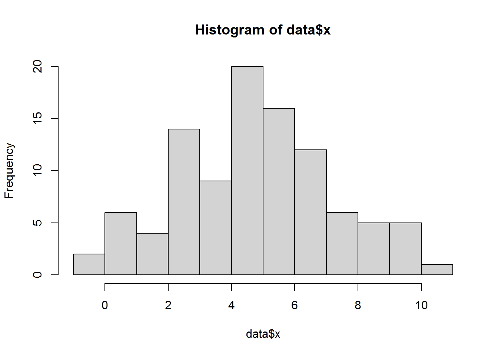
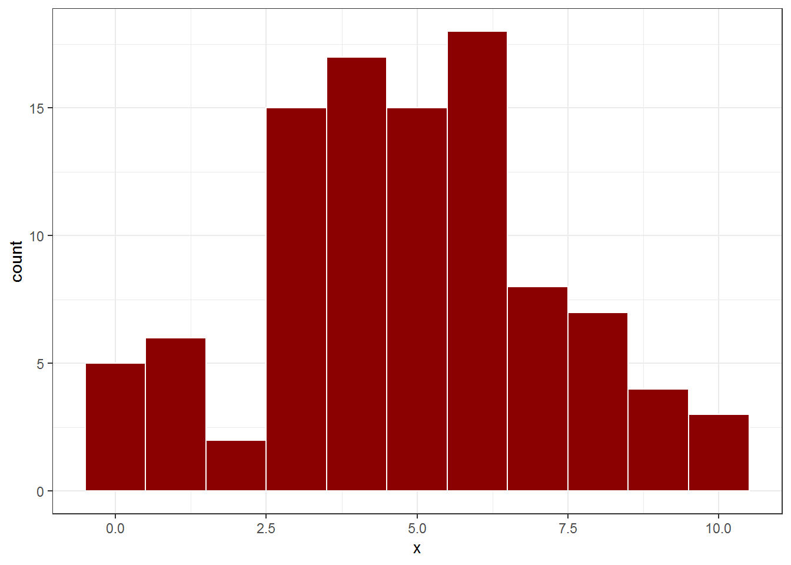
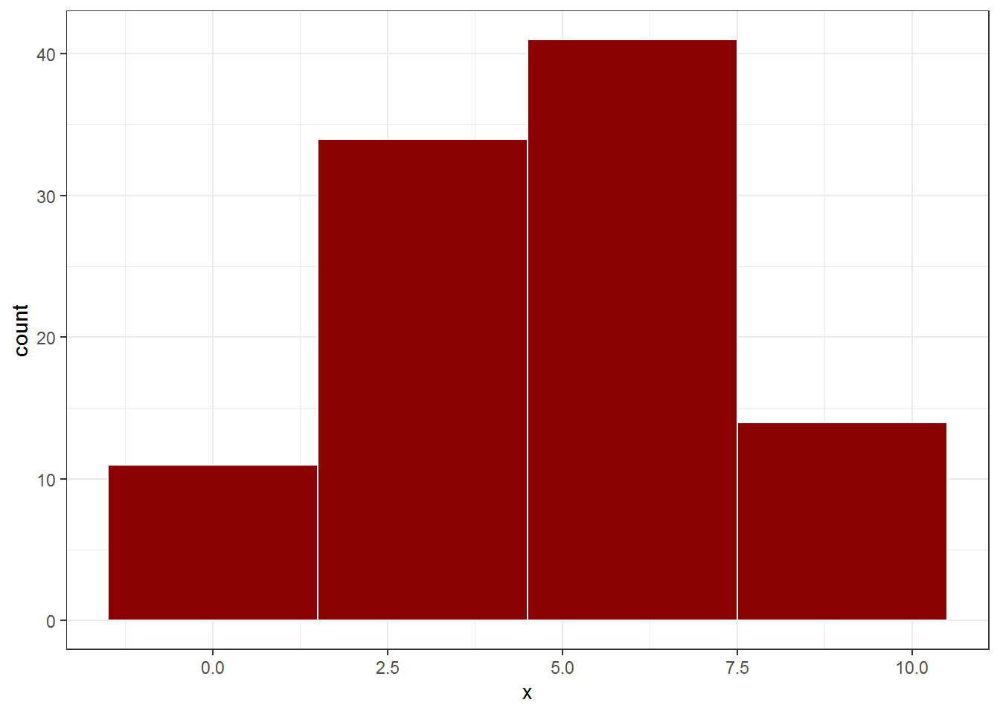
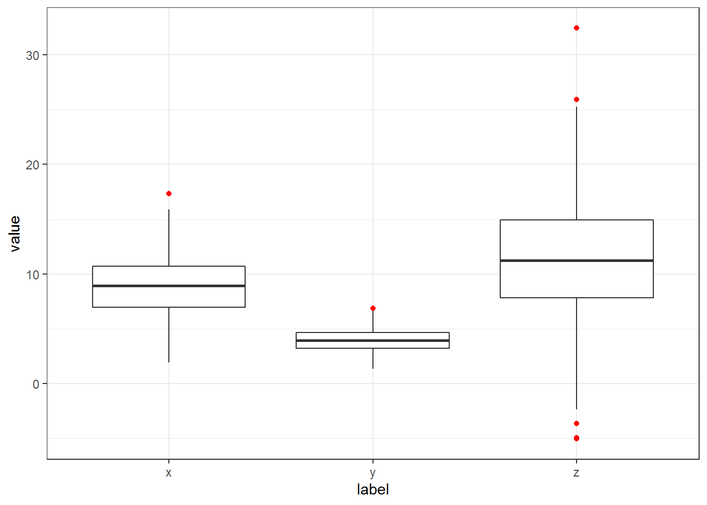

Chapter 6 Plot dengan ggplot2
Plot adalah salah satu hal mendasar yang dapat digunakan untuk menggambarkan distribusi data. Program R pun memiliki perintah - perintah untuk membuat sebuah plot. Namun perintah - perintah tersebut masih merupakan perintah yang sederhana. Hasilnya, gambar kurang menarik untuk disajikan pada khalayak umum.
ggplot2 merupakan sebuah paket yang dapat digunakan pada program R dengan cara melakukan instalasi terlebih dahulu menggunakan perintah install.package("ggplot2"). Paket ggplot2 memberikan fasilitas bagi penggunanya dalam membuat sebuah plot yang menarik untuk dilihat. Setelah anda memahami jenis-jenis plot beserta cara penggunaannya, kita dapat menggunakan paket ggpubr yang telah disusun khusus untuk kebutuhan publikasi/penerbitan.
Setelah instalasi paket ggplot2 selesai, selanjutnya kita dapat memanggil paket tersebut dengan perintah
6.1 Bar Plot
Grafik batang merupakan grafik yang digunakan untuk menunjukkan frekuensi dari dara. Grafik batang lebih sering digunakan untuk menunjukkan perbedaan jumlah dari data yang bertipe kategorik seperti jenis kelamin, asal daerah, status perniahan, dsb. Selanjutnya kita akan membuat sebuah grafik batang dengan menggunakan data berikut:
jpc <- c(34, 25, 69, 40, 30, 32, 45)
hr <- c("Sen", "Sel", "Rab", "Kam", "Jum", "Sab", "Min")
x <- data.frame(Hari = hr, Pasien = jpc)
x## Hari Pasien
## 1 Sen 34
## 2 Sel 25
## 3 Rab 69
## 4 Kam 40
## 5 Jum 30
## 6 Sab 32
## 7 Min 45Terdapat perintah barplot dalam R yang merupakan perintah yang sudah tersedia saat melakukan instalasi R. Walapun perintah barplot dapat kita gunakan, namun hasil yang diberikan sangat sederhana dan lebih cocok digunakan untuk sebuah laporan. Berikut adalah cara menggunakan perintah barplot:
Selanjutnya kita akan menggunakan paket ggplot2 untuk menyajikan grafik batang yang lebih menarik. Berikut adalah perintah untuk membuat grafik batang dengan menggunakan paket ggplot2:
penjelasan:
ggplot(x, aes(Hari))adalah perintah untuk membuat sebuah objekggplotdari variabelHaripada dataxgeom_bar(aes(weight=Pasien, fill=Hari, colour=Hari))geom_bar()adalah perintah untuk membuat grafik batang menggunakanggplotweightadalah banyak datanya (dalam kasus yang kita kerjakan: banyaknya Pasien setiap hari)fillbertujuan untuk memberi warna batang (harus sama denganaes(Hari)padaggplotagar setiap batang memiliki warna yang berbeda)colourbertujuan untuk memberi warna garis (harus sama denganaes(Hari)padaggplotagar setiap batang memiliki warna yang berbeda)
theme_bw()bertujuan untuk menentukan temablack and whitepada grafik
6.2 Grafik Histogram
Histogram merupakan grafik batang yang dapat menunjukkan seberapa sering suatu nilai yang berbeda terjadi. Histogram lebih sering digunakan untuk melihat distribusi dari suatu data. Berbeda dengan grafik batang, kita perlu menggunakan data numerik dalam membuat sebuah histogram. Berikut adalah data acak yang dibangkitkan dengan perintah rnorm:
Kita dapat menggunakan perintah hist yang telah tersedia saat melakukan instalasi R.

Selanjutnya kita akan menggunakan perintah yang tersedia pada paket ggplot2.
p <- ggplot(data, aes(x)) +
geom_histogram(binwidth = 1,
color = "white",
fill= "darkred") +
theme_bw()
p
penjelasan:
* ggplot(data, aes(x)) adalah perintah untuk membuat sebuah objek ggplot dari objek x pada data data
* geom_histogram(binwidth = 1, color = "white", fill= "darkred")
- geom_histogram() adalah perintah untuk membuat histogram menggunakan ggplot
- bandwidth adalah lebar dari masing-masing batang
- fill bertujuan untuk memberi warna batang (dalam kasus ini kita akan berikan warna yang sama untuk semua batang)
- colour bertujuan untuk memberi warna garis (dalam kasus ini kita akan berikan warna yang sama untuk semua garis)
* theme_bw() bertujuan untuk menentukan tema black and white pada plot
Selanjutnya bandingkan dengan histogram yang memiliki bandwith berbeda.
p <- ggplot(data, aes(x)) +
geom_histogram(binwidth = 3,
color = "white",
fill= "darkred") +
theme_bw()
p
6.3 Pie Plot
jumlah <- c(23, 57, 20)
label <- c("Setuju", "Tidak setuju", "Tidak tahu")
x <- data.frame(label, jumlah)Menggunakan perintah pie

Menggunakan paket ggplot2
p <- ggplot(x, aes(x="", y=jumlah, fill=label)) +
geom_bar(width = 1, stat = "identity")
p + coord_polar("y", start = 0)penjelasan:
6.4 Box Plot
Menggunakan perintah boxplot
Menggunakan paket ggplot2
## label value
## 1 x 9.678322
## 2 x 11.887350
## 3 x 11.502597
## 4 x 7.089400
## 5 x 3.233326
## 6 x 7.648239
6.5 Line Plot
Menggunakan perintah pie
Menggunakan paket ggplot2
6.6 Scatter Plot
Menggunakan perintah pie
Menggunakan paket ggplot2